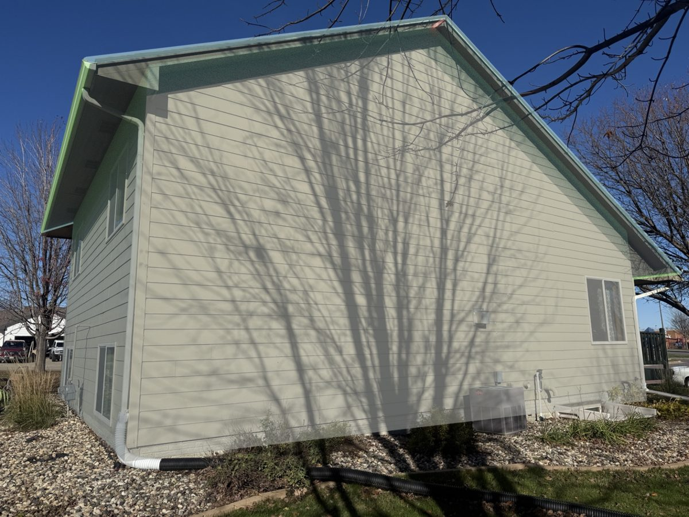
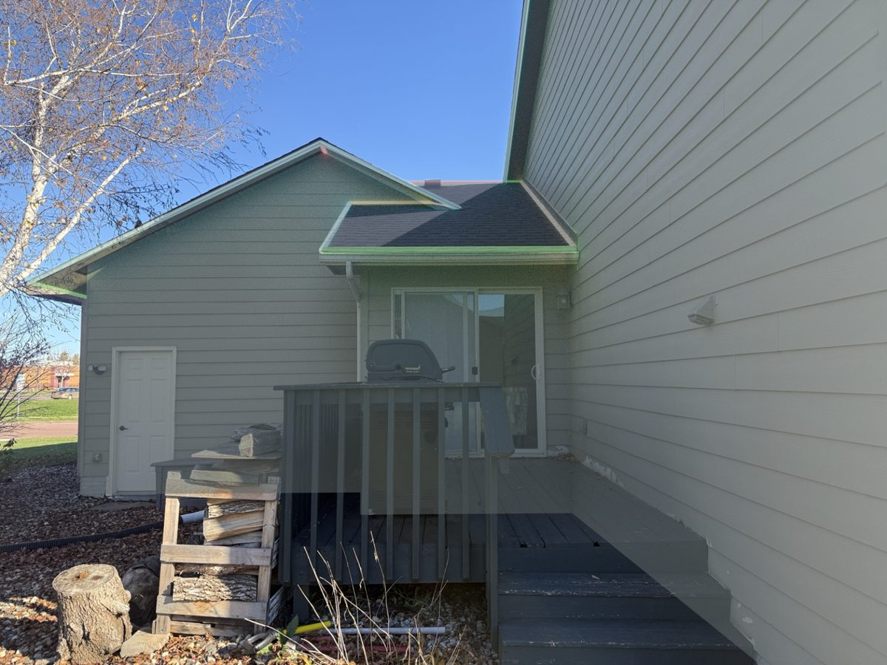
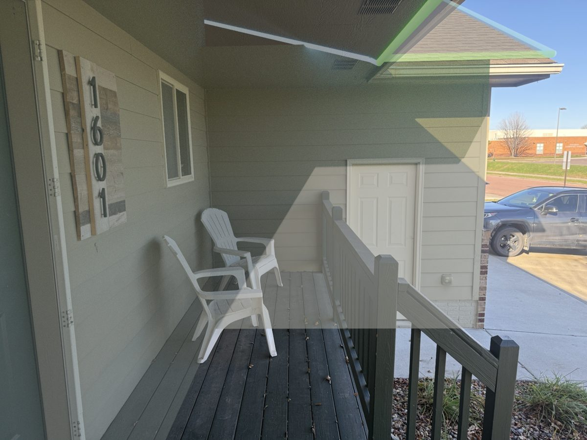
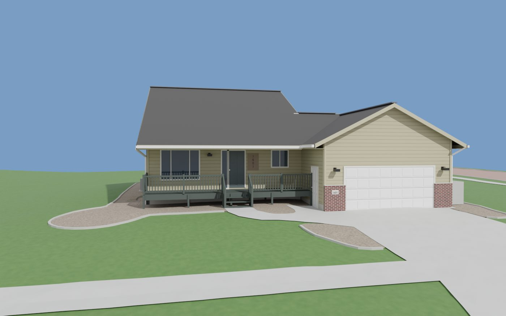
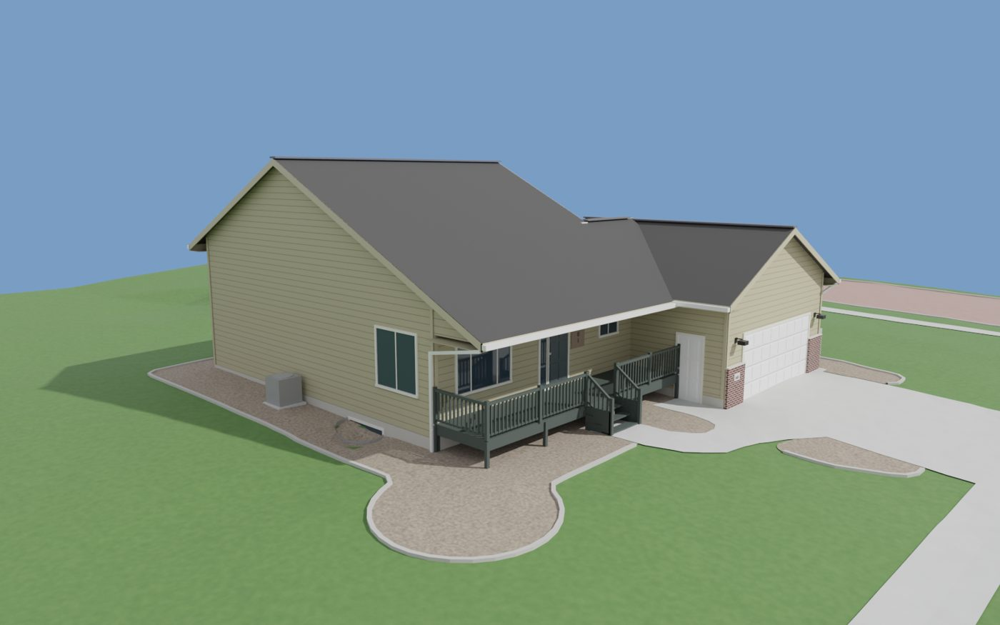
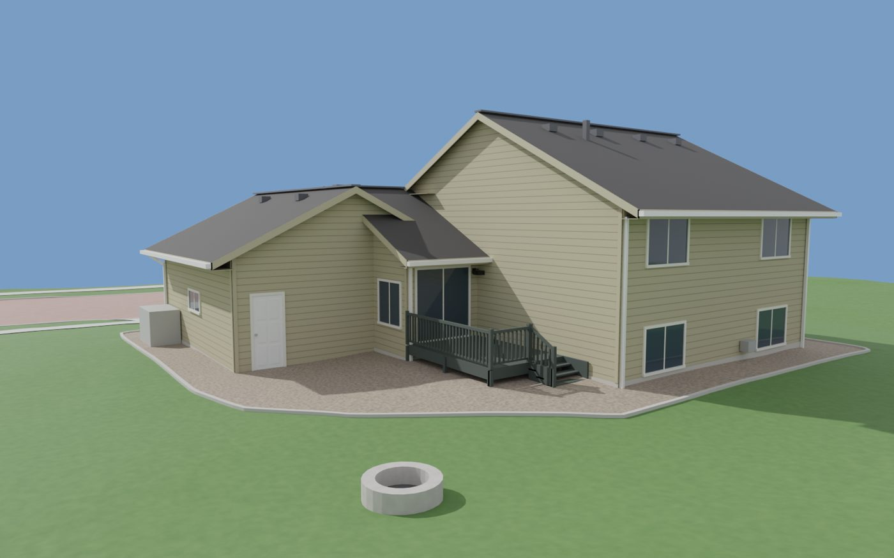
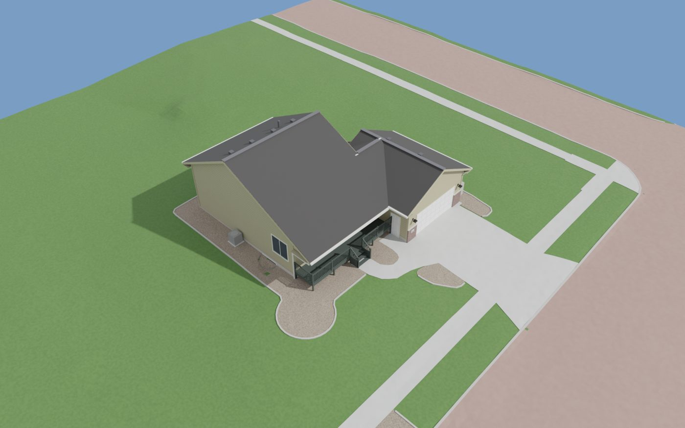
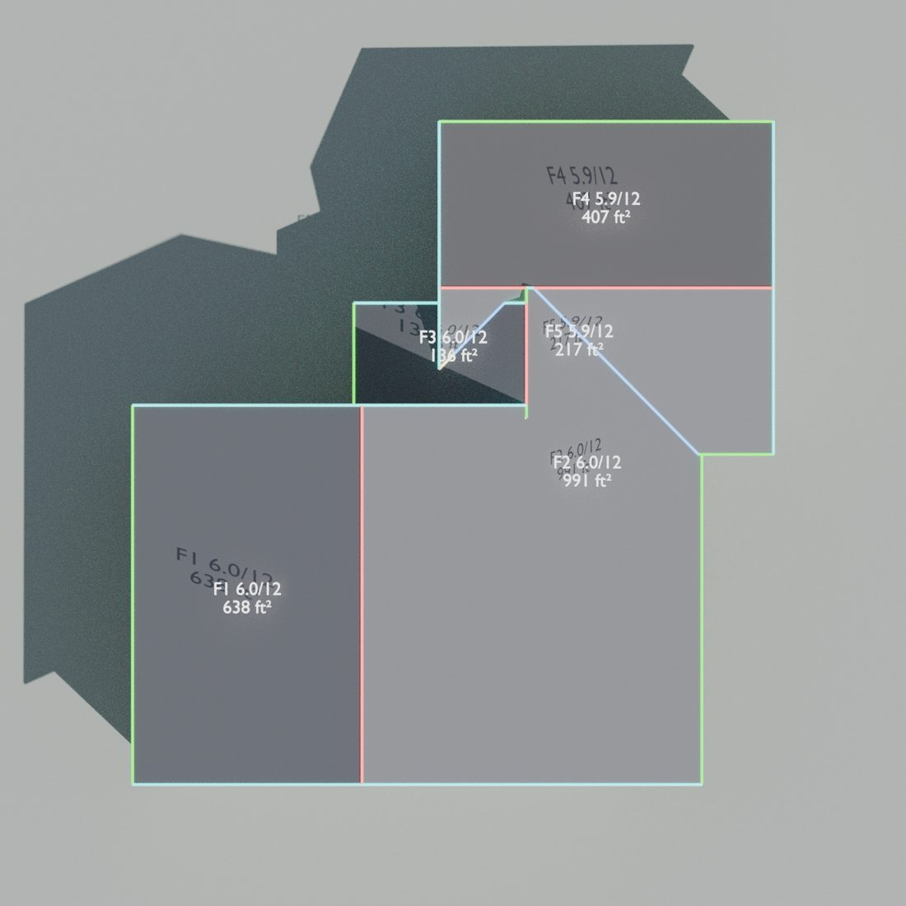

1601 S Discovery Ave, Sioux Falls, SD 57106
Roof and siding measurements from a fitted 3D model. All ± values are one standard deviation (68 %).
Verified: 4 independent reviews, pass with notesRoof facets
| Facet | Faces | Pitch | Area ft² | Area m² |
|---|---|---|---|---|
| F1 main, rear slope | West | 5.95/12 | 638 | 59.2 |
| F2 main front slope + porch + junction | East | 5.95/12 | 991 | 92.0 |
| F3 rear bump | West | 5.95/12 | 136 | 12.6 |
| F4 garage | North | 5.9/12 | 407 | 37.8 |
| F5 garage | South | 5.9/12 | 217 | 20.2 |
| Total roofing | 2,388 ± 38 | 221.9 ± 3.5 |
2.1 m² of the total is real bump roofing under the main and garage rake overhangs; the area visible from above is 2,366 ft². Reference: the city 3D model and the 2023 re-roof permit list 2,340 ft² (the model is +2 %, within the stated uncertainty; those two are probably one source).
Lengths
| Edge | ft | m |
|---|---|---|
| Ridge cap | 66.1 ± 1.1 | 20.15 ± 0.35 |
| Valley (main/garage 6.22 m + bump/garage 2.42 m) | 28.4 ± 1.5 | 8.65 ± 0.45 |
| Eave (= gutter runs) | 100.0 ± 1.1 | 30.48 ± 0.35 |
| Rake | 150.5 ± 3 | 45.9 ± 0.9 |
| Drip edge (eaves + rakes) | 250.5 ± 3 | 76.4 ± 1.0 |
| Step flashing (bump roof on main north wall) | 15.6 ± 1 | 4.76 ± 0.3 |
| Headwall flashing (bump roof on garage west gable) | 4.1 ± 1 | 1.26 ± 0.3 |
| Hips | 0 | 0 |
Walls and siding
| Facade | Gross ft² | Openings ft² | Net ft² |
|---|---|---|---|
| North | 767 | 23 | 744 |
| East (front) | 697 | 186 | 511 |
| South | 832 | 47 | 785 |
| West (rear) | 717 | 139 | 578 |
| Total, grade to roof plane | 3,012 ± 32 | 395 (14 units) | 2,618 ± 38 |
Siding actually clad is an estimate: net 243 m², less the porch attic above the flat ceiling (10.0 m²), brick piers (2.6), foundation reveal (~13) and the soffit/rake band (~14) = 203 ± 8 m² (2,185 ± 85 ft²). One course count to the soffit on the west wall would tighten it.
Model checked against the photos








Evidence and method
- USGS 3DEP LiDAR (flown 2020-12-20, leaf-off): 779 roof returns after removing tree canopy; the model matches them with 4 cm robust spread.
- City of Sioux Falls building footprint and 3D roof wireframe; their ~1 m datum offset was estimated and removed.
- 36 inspection photos (autumn 2026): wall positions, overhangs, porch, openings; 4 photos camera-matched to 2.5–4.2 px.
- Permits: tear-off re-roof finaled 2023-10-18; no additions since the 2003 construction, so the 2020 geometry is current.
- County card (third-party copy): split level, 2003; first floor 1,084 ft², garage 528 ft². Model footprint 1,679 ± 27 ft² (main block 1,075 ft², −0.8 %).
- Robust least-squares fit of a parametric model; uncertainties from Monte Carlo plus wall-position sensitivity; reviewed by four independent checks including a Fable 5.2 advisor.
Largest remaining uncertainties: main north rake position (city outline says 0.2 m further south, about −2 m²), garage plate height (photos 0.1 m lower than LiDAR; walls only), and the soffit band height (siding). One taped eave-to-porch-drip length (expected 14.06 m) would remove most of the roof-area uncertainty.